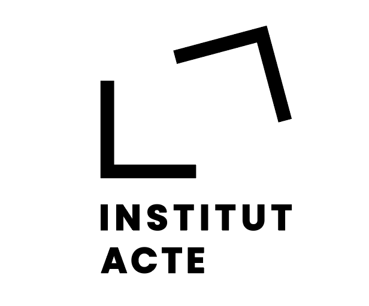

PASE 2022
14 décembre 2022
Université de Paris 1-Panthéon Sorbonne
Université de Paris 1-Panthéon Sorbonne
| Accueil | Programme | Lien Zoom |
L’Institut ACTE – Art Création Théorie Esthétique de l’École des Arts de la Sorbonne (Université Paris1 Panthéon-Sorbonne) organise une journée d’études sur la question de la Pratique des Arts du Son à l’Ecole, le mercredi 14 décembre 2022. Elle porte sur l’enseignement des arts liés au son à l’école.
Le son est présent dans toutes nos activités : sociales, culturelles, commerciales, économiques, politiques, environnementales, religieuses, scolaires… Les échanges de parole, l’écoute de la musique sont le vécu quotidien de nos oreilles. Nous sommes confrontés, sinon sourds, aux sons que nous produisons ou qui sont produits autour de nous. Les sons deviennent des bruits dès lors qu’ils interagissent dans la communauté. Un bruit peut être ressenti comme une agression auditive. Mais un bruit c’est aussi l’alerte de l’évènement, utile pour se mouvoir dans l’espace urbain par exemple, le bruit est partout là où il y a mouvement.
On entend autant de sons qu’il n’y a de bruit, donc l’agression sonore est permanente, même lorsqu’on ne souffre d’aucun trouble auditif. Il faut simplement comprendre comment les sons peuvent s’apprivoiser. Parmi nos cinq sens, le sens auditif est un écosystème avec son équilibre parmi les autres sens. L’écoute du monde et sa perception sont complémentaires mais en même temps disjointes.
En termes de création sonore et d’éveil de la conscience, la perception est sélective et peut-être insensible à certains sons : la « conscience intime du temps » et de la durée chez Husserl et Bachelard sont des pistes de réflexion ; mais également la perception sensorielle qui communique des sensations acoustiques elles-mêmes ravivées par « la mémoire des sensations » chère à Condillac, et qui révèle des formes d’art, comme autant d’opportunité de « spéculer sur les ondes ».
Le bruit est surtout utile pour nous situer dans l’espace-temps : un mode de représentation auditive qui nous permet d’éviter les dangers et d’identifier l’écosystème socioculturel de nos environnements. Le son nous informe, il communique ses messages par le canal auditif. Or, ce qu’une personne atteinte de surdité fera par des gestes où à l’écrit par les yeux pour communiquer, ce sera de transcrire une vibration auditive en une vibration intelligible.
Notre univers sonore est composé de sons qui ont du sens. De même qu’ils nous renseignent sur notre environnement et nous situent dans l’espace, ils nous permettent de mieux communiquer. L’audition a une fonction cognitive et anthropologique (de dé/) d’intégration sociale. D’ordre psychophysique la vibration/perception auditive peut être vécue comme une pollution de l’environnement sonore subie par l’organisme.
Pour comprendre toutes les sources sonores et mieux coexister avec elles, l’éducation de l’écoute est nécessaire. Il faut alors repenser l’éducation de l’oreille en fonction de critères écologiques. Comprendre son environnement acoustique pour en améliorer le cadre auditif est aussi l’enjeu de ce projet. Comme Henry Torgue (2005) le souligne : « Vivre mal en société, c'est vivre mal les bruits qu'elle produit. Vivre mal avec les autres, c'est ne pas supporter les bruits qu'ils produisent. »
Peu importe les types de son - naturels (chant d’oiseau, chant du vent, ...) ou artificiels (bruit de moteur, machine, klaxon, ...) – le jeune auditeur peut être soumis à un dysfonctionnement de l’écoute - incompréhension, inattention, gêne, douleur. Dans le but d’y remédier et afin de réduire des dysfonctionnements sensoriels possibles (et non répertoriés), on peut imaginer mieux préparer l’enfant à son environnement sonore alors expliqué comme une double réalité, celle « d’un monde qui écoute » et la réalité « qu’on écoute ». En donnant à l’enfant une éducation auditive en phase avec son milieu de vie, il parviendra à mieux (se) connaitre et comprendre les conditions et contraintes acoustiques auxquelles il est soumis.
Le son est également susceptible d’être utilisé dans différents registres artistiques. Les arts sonores en tant que champ artistique pluridisciplinaire regroupent plusieurs disciplines, notamment la musique et les arts plastiques. Dans le sillage des idées avancées par Luigi Russolo introduisant les bruits urbains dans la musique, s’ajoutent celles de R. Murray Schafer avec son « paysage sonore », montrant le monde comme une vaste composition musicale dans laquelle tout semble déjà organisé.
Pratiquer les arts liés aux sons, c’est s’ouvrir au monde : c’est regarder le monde en l’écoutant. Aussi, cette pratique et /ou ce savoir peut(vent) être vulgarisé(es) à plus grande échelle, et proposé comme réflexion dans les écoles en guise d’éveil musical.
Nous pensons que le jeune public des écoles doit et peut sur un plan cognitif être plus réceptif et armés envers les sons qui l’entourent, les respecter et vivre en harmonie avec eux. Au-delà de la pratique musicale de « tous les sons de la vie courante », il s’agit d’avoir une éthique écologique – écoacoustique -.
Bien que centrée sur les arts du son à l’école, la thématique de cette journée d’étude concerne tout aussi bien l’écologie sonore : toutes techniques d’analyse et d’écoute du monde sonore ; et l’éducation d’une écoute engagée au sein d’un milieu environnemental : comprendre le sens du son, ses nuisances, l’hygiène sonore, protocole d’évaluation sonore depuis la tolérance zéro. Tout ce qui concerne l’écoute en milieu scolaire et la projection de ce modèle écologique dans la conscience collective est important.
Les axes thématiques (non exhaustifs) visés sont les suivants :
Pédagogie, psychoacoustique et neurosciences. Apprentissage et sémiologie des écoutes. Cognition et audition Méthodologie sur les environnements sonores. Surexposition au son et hygiène sonore. La musique au prisme de l’étau urbain. Symbolique et écoute collective. Pollution sonore en milieu scolaire, et en général.
Cette journée d’étude aura lieu par zoom. La durée de communication sera de 20 minutes maximum.
Langue de communication : Français.
Les propositions de communication (de l’ordre de 500 mots, en français ou en anglais) sont à envoyer conjointement aux adresses suivantes : fpecquet1@gmail.com, kouassi.dongo@etu.univ-paris1.fr , armanddongo@hotmail.com , pour le 18 septembre 2022. Elles seront accompagnées d’une courte notice bio-bibliographique. Une réponse sera donnée mi-octobre.
Armand Dongo / Université de Paris 1-Panthéon Sorbonne Amal M’Sakni / Université de Paris 1- Panthéon Sorbonne Misaki Goto/ Université de Paris 1- Panthéon Sorbonne
Frank Pecquet / Université de Paris 1-Panthéon Sorbonne Gérard Pelé / Université de Paris 1-Panthéon Sorbonne Armand Dongo / Université de Paris 1-Panthéon Sorbonne Amal M’Sakni / Université de Paris 1- Panthéon Sorbonne Misaki Goto / Université de Paris 1- Panthéon Sorbonne
|  |